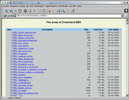
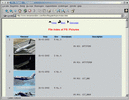
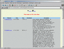

Last update 09-Feb-2002
How to setup an webserver to work with MBSE BBS.
Introduction
To let a webserver work with MBSE BBS you must organize a special file structure. Note that even if you don't setup a webserver you must still create a structure like this for the fidonet mailer, if you don't, mail and files will get lost! This description is written for Apache, this is installed on most Linux and xxxBSD distributions. For the directory structure, read the setup for the FTP server.
Important settings in mbsetup.
Screen 1.18:
1. Base path /opt/mbse/ftp/pubScreen 1.19:
1. Docs root /var/www/htdocs 2. Link to ftp files 3. URL name http://www.mbse.ymThe base ftp path is the default which mbse bbs installs. The Docs root for the apache httpd server is different on each distribution, in this example it is set for Slackware 8.0. Because the directory /var/www/htdocs has nothing to do with /opt/mbse/ftp/pub we make an alias link named files. For the URL name you must fill in the real internet name how your bbs is reached. If someone types this in, he must get the index.html from the directory /var/www/htdocs, the docs root. I just assume you have your http server up and running.
Now you can run the command mbfile index, this will create a main index in the directory /opt/mbse/ftp/pub and additional index.html files in all your download areas.
Change Apache server configuration.
As root edit your httpd.conf file, it is possible that you find it in /etc/apache, but that depends on your distribution. In the section between <IfModule mod_alias.c> and </IfModule> insert the following lines:
#
# Alias for MBSE BBS download areas.
#
Alias /files/ /opt/mbse/ftp/pub/
<Directory "/opt/mbse/ftp/pub">
Options Indexes MultiViews
AllowOverride None
Order allow,deny
Allow from all
</Directory>
#
# Alias to access the MBSE BBS documenatation
#
Alias /mbseman/ /opt/mbse/html/
<Directory "/opt/mbse/html">
Options Indexes MultiViews
AllowOverride None
Order allow,deny
Allow from all
</Directory>
Then restart Apache with the command apachectl restart Now if you access
your webserver with for example http://www.mybbs.com/files/ you must be able to
browse the filelists. If you use http://www.mybbs.com/mbseman/ you must be able
to browse this documentation online.
Example views
This are some snapshots of how this will look like, click to enlarge:
|  |  |  |
{kind=link}
{kind=link}
{kind=link}